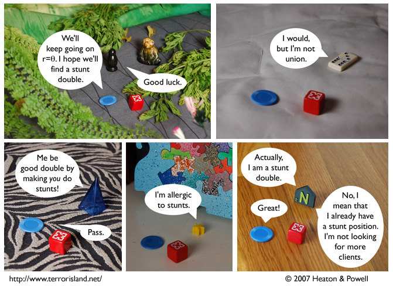

Strip #233
— Friday, December 7, 2007
Geography City has very diverse terrain.
Notes, Thoughts, &c.
Ben’s Notes
It’s been a while since we’ve had a five-panel strip. And I think this may be the first time we’ve had one with a different location in each panel.
Lewis’s Notes
I honestly did not think about the fact that stunt double work would need to be unionized until Lord Terror mentioned it. The things you learn from the comics, eh?